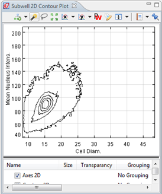

The 2D Contour Plot shows contour lines on places where the density is greater than a certain level. It illustrates the height or in this case the number of points on or near each other.
The subwell 2D Contour Plot is used to show the density of subwell points (cells).

Extra layers that can be added:
| Scatter 2D Layer | This will add a Scatter Layer to the plot. This can be used to imitate the 2D Scatter Plot. |
| Density 2D Layer | This will add another layer of the default Density Plot. |
| Scatter-Density 2D Layer | This will imitate the Scatter-Density plot. However, if you want to use scatter and density, use of a "Scatter-Density Plot" is advised. |
| Contour 2D Layer | This will show gravity lines around areas according to the density. We recommend that you smoothen the lines with the layer settings for a better result. |
| Cell Image Layer | This shows the well image (if available) of the selected points (cells) |
| Compound Layer | This shows an graphical representation (if available) of the compounds of the selected points. |
| Gates Layer | With a gate layer, you can group the points in a given way. (e.g. group the dead and the living cells using gates) For more info, refer to Chart Settings - Gates |
Tip: Sub-well 2d density plots combine very well with Contour plots. We also added a cell image layer, that shows as much cell images of the selected cells. The whole selection is shown in the Subwell Image Set View.

Tip: When you give focus to a (subwell) Contour Plot by clicking on the contour layer in the legend, you can select whole ranges of cells by clicking or encircling in one or more contour bands. This generates a selection; all selected elements (here: cells) will be shown in a Subwell Image Set View. All selected items can then be classified by clicking on the classification icon in the top of the plot.